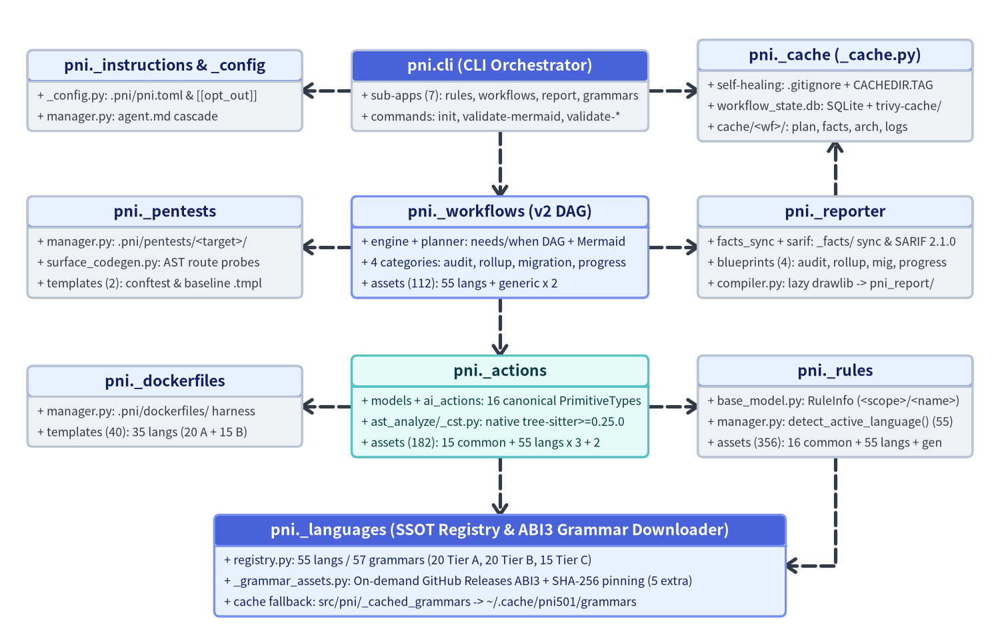
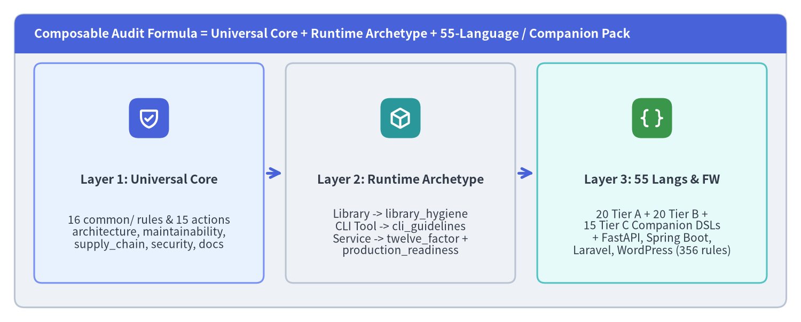
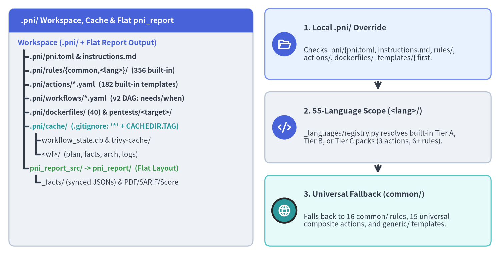

Domain Architecture & Three-Tier Cascade Resolution
pni501 (v0.2.0) organizes its implementation under src/pni/ around eight vertical domain packages (_languages, _workflows, _actions, _reporter, _rules, _pentests, _dockerfiles, and _instructions), a project manifest loader (_config.py), a self-healing cache utility (_cache.py), and a thin Typer + Rich CLI orchestrator (cli.py). Each domain colocates its Pydantic v2 schemas, execution or resolution logic, and built-in .md, .yaml, .dockerfile, or .tmpl assets across all 55 supported languages / 57 Tree-sitter grammars (356 built-in rule files, 182 action templates, 112 workflow templates, and 40 container harness templates)—preserving a strict module-level Directed Acyclic Graph (circular_dependencies = []).

Source Code
from drawlib.canvas import save, setup
from drawlib.diagrams.class_diagram import ClassDiagram, ClassNode
from drawlib.styles import Colors, Styles
setup(width=182, height=116, dpi=150)
diagram = ClassDiagram(
node_style=Styles.Neutral.patch(text_size=10.0),
header_style=Styles.PrimaryNeutral.patch(text_size=10.5),
edge_style=Styles.DarkBold,
edge_text_style=Styles.PrimaryBold.patch(text_size=10.0),
)
inst_node = ClassNode(
"pni._instructions & _config",
width=50.0,
header_height=5.6,
row_height=3.8,
)
inst_node.add_attribute("_config.py", ".pni/pni.toml & [[opt_out]]")
inst_node.add_attribute("manager.py", "agent.md cascade")
diagram.add(inst_node, xy=(30.0, 99.5))
cli_node = ClassNode(
"pni.cli (CLI Orchestrator)",
width=54.0,
header_height=5.6,
row_height=3.8,
header_style=Styles.PrimaryFlat.patch(text_color=Colors.White, text_size=10.5),
)
cli_node.add_attribute("sub-apps (7)", "rules, workflows, report, grammars")
cli_node.add_attribute("commands", "init, validate-mermaid, validate-*")
diagram.add(cli_node, xy=(91.0, 99.5))
cache_node = ClassNode(
"pni._cache (_cache.py)",
width=50.0,
header_height=5.6,
row_height=3.8,
)
cache_node.add_attribute("self-healing", ".gitignore + CACHEDIR.TAG")
cache_node.add_attribute("workflow_state.db", "SQLite + trivy-cache/")
cache_node.add_attribute("cache/<wf>/", "plan, facts, arch, logs")
diagram.add(cache_node, xy=(152.0, 99.5))
pentest_node = ClassNode(
"pni._pentests",
width=50.0,
header_height=5.6,
row_height=3.8,
)
pentest_node.add_attribute("manager.py", ".pni/pentests/<target>/")
pentest_node.add_attribute("surface_codegen.py", "AST route probes")
pentest_node.add_attribute("templates (2)", "conftest & baseline .tmpl")
diagram.add(pentest_node, xy=(30.0, 71.0))
wf_node = ClassNode(
"pni._workflows (v2 DAG)",
width=54.0,
header_height=5.6,
row_height=3.8,
style=Styles.PrimaryNeutral.patch(text_size=10.0),
)
wf_node.add_attribute("engine + planner", "needs/when DAG + Mermaid")
wf_node.add_attribute("4 categories", "audit, rollup, migration, progress")
wf_node.add_attribute("assets (112)", "55 langs + generic x 2")
diagram.add(wf_node, xy=(91.0, 71.0))
rep_node = ClassNode(
"pni._reporter",
width=50.0,
header_height=5.6,
row_height=3.8,
)
rep_node.add_attribute("facts_sync + sarif", "_facts/ sync & SARIF 2.1.0")
rep_node.add_attribute("blueprints (4)", "audit, rollup, mig, progress")
rep_node.add_attribute("compiler.py", "lazy drawlib -> pni_report/")
diagram.add(rep_node, xy=(152.0, 71.0))
docker_node = ClassNode(
"pni._dockerfiles",
width=50.0,
header_height=5.6,
row_height=3.8,
)
docker_node.add_attribute("manager.py", ".pni/dockerfiles/ harness")
docker_node.add_attribute("templates (40)", "35 langs (20 A + 15 B)")
diagram.add(docker_node, xy=(30.0, 42.0))
act_node = ClassNode(
"pni._actions",
width=54.0,
header_height=5.6,
row_height=3.8,
style=Styles.SecondaryNeutral.patch(text_size=10.0),
header_style=Styles.SecondaryNeutral.patch(text_size=10.5),
)
act_node.add_attribute("models + ai_actions", "16 canonical PrimitiveTypes")
act_node.add_attribute("ast_analyze/_cst.py", "native tree-sitter>=0.25.0")
act_node.add_attribute("assets (182)", "15 common + 55 langs x 3 + 2")
diagram.add(act_node, xy=(91.0, 42.0))
rules_node = ClassNode(
"pni._rules",
width=50.0,
header_height=5.6,
row_height=3.8,
)
rules_node.add_attribute("base_model.py", "RuleInfo (<scope>/<name>)")
rules_node.add_attribute("manager.py", "detect_active_language() (55)")
rules_node.add_attribute("assets (356)", "16 common + 55 langs + gen")
diagram.add(rules_node, xy=(152.0, 42.0))
lang_node = ClassNode(
"pni._languages (SSOT Registry & ABI3 Grammar Downloader)",
width=104.0,
header_height=5.6,
row_height=3.8,
style=Styles.PrimaryNeutral.patch(text_size=10.0),
header_style=Styles.PrimaryFlat.patch(text_color=Colors.White, text_size=10.5),
)
lang_node.add_attribute("registry.py", "55 langs / 57 grammars (20 Tier A, 20 Tier B, 15 Tier C)")
lang_node.add_attribute("_grammar_assets.py", "On-demand GitHub Releases ABI3 + SHA-256 pinning (5 extra)")
lang_node.add_attribute("cache fallback", "src/pni/_cached_grammars -> ~/.cache/pni501/grammars")
diagram.add(lang_node, xy=(91.0, 13.0))
diagram.connect(cli_node, inst_node, "dependency", start_side="left", end_side="right")
diagram.connect(cli_node, cache_node, "dependency", start_side="right", end_side="left")
diagram.connect(cli_node, wf_node, "dependency", start_side="bottom", end_side="top")
diagram.connect(wf_node, pentest_node, "dependency", start_side="left", end_side="right")
diagram.connect(wf_node, rep_node, "dependency", start_side="right", end_side="left")
diagram.connect(wf_node, act_node, "dependency", start_side="bottom", end_side="top")
diagram.connect(rep_node, cache_node, "dependency", start_side="top", end_side="bottom")
diagram.connect(act_node, docker_node, "dependency", start_side="left", end_side="right")
diagram.connect(act_node, rules_node, "dependency", start_side="right", end_side="left")
diagram.connect(act_node, lang_node, "dependency", start_side="bottom", end_side="top")
diagram.connect(rules_node, lang_node, "dependency", start_side="bottom", end_side="right")
diagram.draw(xy=(0.0, 0.0))
save()
1. High-Cohesion Vertical Domain Packages (src/pni/)
Traditional CLI codebases often slice code horizontally—scattering Pydantic models across models/, YAML/Markdown loaders across config/, subprocess runners across executors/, and static files across templates/. Modifying a single audit capability then forces synchronized edits across four disconnected directories and inflates context overhead for both human maintainers and AI coding agents.
pni501 instead organizes src/pni/ into eight self-contained vertical domain packages. Top-level src/pni/__init__.py exports only package identity constants (LIB_NAME = "pni501", LIB_VERSION = "0.2.0", and __version__), while every subsystem colocates its schemas, orchestration modules, and packaged templates inside its own bounded directory:
| Package / Module | Core Python Modules | Key Schemas & Responsibilities | Packaged Built-in Assets |
|---|---|---|---|
cli.py |
cli.py |
Typer root app + 7 sub-apps (rules, workflows, report, pentests, progress, cache, grammars) and root commands (init, instructions, validate-score, validate-migration-plan, validate-progress, validate-mermaid, version, --version / -V) |
Rich CLI help epilog & AI bootstrap instructions |
_languages/ |
registry.py, _grammar_assets.py |
Single Source of Truth (LANGUAGE_REGISTRY, GRAMMAR_PROVIDERS) for 55 languages / 57 Tree-sitter grammars across 3 tiers (20 Tier A Full Audit, 20 Tier B Static Audit, 15 Tier C Companion DSL/IaC); Drawlib-style on-demand GitHub Releases ABI3 downloader with SHA-256 pinning and _cached_grammars -> ~/.cache/pni501/grammars fallback |
52 PyPI grammar bindings + 5 on-demand ABI3 release grammars (cobol, dockerfile, protobuf, r, vue) |
_workflows/ |
base_model.py, state_db.py, manager.py, planner.py, mermaid_validator.py, provenance.py, baseline.py, _projection.py, engine.py, _rollup_engine.py, _migration_engine.py, _progress_engine.py, aggregator.py, adhoc.py, inspector.py |
Workflow v2 Conditional DAG engine (needs, when, fact_views), Phase 0 recon & validated Mermaid DAG planning (WorkflowExecutionPlan), confirm_plan gate, parallel frontier (get-actions), 4 categories (audit, rollup, migration, progress), ExecutionDagSummary, and finding false-positive triage |
112 starter workflow YAML templates (55 languages + generic, each providing full_audit.yaml & quick_check.yaml) |
_actions/ |
base_model.py, manager.py, ai_actions.py, project_inspect.py, _extended_manifests.py, _repo_governance.py, plus ast_analyze/ (_cst.py, base/, declarative/, companion.py, 6 dedicated suites), runtime_check/, security_scan/, pentest/, migration_analyze/, progress_analyze/ |
16 canonical PrimitiveType steps (7 deterministic auto-executed analyzers + 9 grounded AI/gate primitives), native tree-sitter>=0.25.0 parse-once CST wrapper (_cst.py), ScoreResult (7 axes + triaged_adjustments + execution_dag), ArchitectureRecord, MigrationPlanResult |
182 built-in composite YAML action templates (15 in common/ + 3 per language across 55 languages + 2 in generic/) |
_reporter/ |
base_model.py, blueprint.py, rollup_blueprint.py, migration_blueprint.py, progress_blueprint.py, drawlib_guide.py, facts_sync.py, sarif.py, compiler.py |
Flat report pipeline (pni_report_src -> pni_report), automatic <src_dir>/_facts/ evidence sync (sync_workflow_facts_to_report), *_summary.json + SARIF 2.1.0 emission, 4 blueprint builders, and lazy drawlib.tools compilation |
7-chapter Drawlib doc scaffolding, chapter linter, and _assets/{logo.png,logo_dark.png,favicon.png} |
_rules/ |
base_model.py, manager.py |
RuleInfo, SUPPORTED_LANGUAGES (derived from _languages/registry.py), detect_active_language() across 55 languages, and <scope>/<name> cascade resolution |
356 built-in Markdown rule files across common/ (16), 55 language packs, and generic/ |
_pentests/ |
manager.py, surface_codegen.py |
Materializes and validates target-scoped pytest + httpx Web penetration suites in .pni/pentests/<target>/, generating test_target_surface.py from AstFacts.api_endpoints |
2 probe templates: conftest.py.tmpl, test_baseline_http.py.tmpl |
_dockerfiles/ |
manager.py |
Resolves .pni/dockerfiles/_templates/ overrides or built-in container harnesses into .pni/dockerfiles/ alongside an isolated .dockerignore and prune_pni_container_artifacts() |
40 container harness templates covering 35 languages (20/20 Tier A + 15 Linux-native Tier B) |
_instructions/ & _config.py |
base_model.py, manager.py, _config.py |
InstructionInfo, PniConfig, OptOutEntry; resolves .pni/instructions.md and .pni/pni.toml project manifests & [[opt_out]] waivers |
agent.md & default .pni/pni.toml template |
_cache.py |
_cache.py |
Self-healing .pni/cache/ initializer (ensure_cache_dir, ensure_cache_parent) and workspace-safe path resolvers (normalize_target_subpath) |
Auto-generated .pni/cache/.gitignore (*) and CACHEDIR.TAG |
Colocating Python modules and static assets inside each package makes BUILTIN_*_DIR = Path(__file__).resolve().parent deterministic in editable installs and pure-Python (py3-none-any) wheels alike.
2. Module-Level Dependency Hierarchy, _languages SSOT & On-Demand ABI3 Grammars
Every import across src/pni/ forms a strict module-level Directed Acyclic Graph—verified continuously by pni501 running ast_analyze on its own src/pni/ tree (circular_dependencies = []):
- CLI Orchestrator (
src/pni/cli.py): Parses user arguments, formats Rich tables and Markdown panels, and dispatches commands into_workflows,_actions,_reporter,_rules,_pentests,_languages,_instructions,_config, and_cache. No internal module ever importspni.cli. - Stateful Workflow v2 DAG Orchestration (
src/pni/_workflows/):planner.pyandmermaid_validator.pyperform Phase 0 lightweight recon (pni workflows plan <id>), safe AST evaluation ofwhen:guards, and 2-layer Mermaid validation (Layer 1 pure-Python static guardrails + Layer 2--browserPlaywrightmermaid.parse()).engine.py,_rollup_engine.py,_migration_engine.py, and_progress_engine.pycoordinate SQLite persistence (state_db.py), pre-flight prerequisite gates, parallel deterministic frontier execution, step-scopedfact_viewsprojection (_projection.py), path-grounding verification, executed DAG provenance (provenance.py), andaggregator.py7-axis score synthesis + false-positive triage (finding_adjustments). See Stateful Pull-Push Engine for full protocol details.adhoc.py(pni workflows run-action/run-step) executes single actions directly in memory with zero SQLite writes, whileinspector.pypowerspni workflows statusandinspect-action.
- Action Subsystems & Flat Report Compiler (
_actions/,_reporter/,_pentests/,_dockerfiles/):_actions/ast_analyze/_cst.pyreplaces the legacyast-grep-pydependency with a nativetree-sitter>=0.25.0parse-once CST wrapper (CstNode+ lazy 1-passTreeCursorkind index), feeding 6 dedicated suites (python/,java/,php/,go/,ts_js/), 49 declarative grammar profiles (declarative/), and 15 Tier C companion DSL scanners (companion.py)._reporter/facts_sync.pyautomatically synchronizes structured workflow evidence (plan.json,facts.json,architecture.json,blueprint.json) into flat<src_dir>/_facts/(defaultpni_report_src/_facts/), while_reporter/compiler.pyloadsdrawlib.toolslazily viaimportlib.import_module("drawlib.tools")to compile flatpni_report_src -> pni_reportdeliverables without slowing downpni rulesorpni workflows.
- Zero-Sibling Leaf Foundations (
_languages/,_rules/,_instructions/,_cache.py):_languages/registry.pyis the zero-sibling single source of truth defining all 55LanguageSpecentries and 57GrammarProviderSpecbindings (including dual grammars such asphp/php_onlyandtypescript/tsx)._languages/_grammar_assets.pykeepspni501a lightweight pure-Python wheel by downloading the 5 MIT-licensed Tree-sitter grammars that lack 3-OS PyPI wheels (COBOL, Dockerfile, Protocol Buffers, R, and Vue) on demand as prebuilt ABI3 binaries from GitHub Releases (grammars-v0.2.0), verifying pinned SHA-256 digests under thread +fcntladvisory file locks. Writable cache resolution follows Drawlib's exact fallback chain:PNI_GRAMMAR_CACHE_DIR-> package-localsrc/pni/_cached_grammars-> OS user cache (~/.cache/pni501/grammarsor%LOCALAPPDATA%\pni501\grammars) -><tmp>/pni501_grammars. Operators can pre-warm or inspect grammars viapni grammars status,pni grammars prefetch --all, andpni grammars clear.
3. Orthogonal Taxonomy: Universal Archetypes vs. 55-Language Packs
A recurring anti-pattern in static analysis toolchains is rewriting architectural, security, and operational rules separately for every programming language. In pni501, rules (src/pni/_rules/) and composite actions (src/pni/_actions/) are partitioned along three orthogonal layers:
- Universal Standards (
common/*— 16 rules, 15 actions): Govern language-independent invariants—layered dependency direction (common/architecture), SIG unit complexity limits (common/maintainability), OpenSSF lockfile and CI token hygiene (common/supply_chain), OWASP secret/injection defenses (common/security), 12-Factor statelessness (common/twelve_factor), Google SRE I/O timeouts (common/production_readiness),clig.devCLI ergonomics (common/cli_guidelines), public library API contracts (common/library_hygiene), Diátaxis documentation (common/documentation), and rollup/migration/progress reporting governance. - Three-Tier Language Packs (
<lang>/*— 55 languages / 57 grammars):- Tier A — Full Engineering Audit (20 languages):
python,java,php,go,typescript,javascript,csharp,rust,ruby,kotlin,swift,c,cpp,scala,dart,elixir,vue,perl,cobol,r— each with full AST analysis, built-in container harness Dockerfile, 3 language-scoped actions, and 6+ rules. - Tier B — Static Audit (20 languages):
bash,powershell,groovy,objc,lua,haskell,fsharp,ocaml,zig,julia,fortran,matlab,svelte,solidity,cuda,verilog,vhdl,ada,odin,commonlisp— full Tree-sitter static AST auditing, plus Linux-native container harnesses for 15 of them. - Tier C — Companion DSL / IaC / Schema / Config (15 languages):
dockerfile,hcl,bicep,nix,make,starlark,protobuf,sql,html,css,scss,yaml,json,toml,xml— automatically scanned as polyglot companion files alongside application code (companion.py).
- Tier A — Full Engineering Audit (20 languages):
- Framework Overlay Packs (
<lang>/frameworks/*): Govern framework-specific lifecycle and DI patterns—such aspython/frameworks/fastapi,java/frameworks/spring_boot,php/frameworks/laravel, andphp/frameworks/wordpress.

Source Code
from drawlib.canvas import save, setup
from drawlib.icons import phosphor
from drawlib.smartarts import CardList, Panel
from drawlib.styles import Styles
setup(width=164, height=66, dpi=150)
panel = Panel(
"Composable Audit Formula = Universal Core + Runtime Archetype + 55-Language / Companion Pack",
header_variant="filled",
style=Styles.Neutral.patch(shape_r=2.0),
header_style=Styles.PrimaryFlat,
text_style=Styles.WhiteBold.patch(text_size=11.0),
)
panel.draw(xy=(3.0, 3.0), width=158.0, height=60.0)
layers = CardList(
style=Styles.PrimaryNeutral.patch(shape_r=1.6),
text_style=Styles.DarkBold.patch(text_size=11.0),
description_style=Styles.Dark.patch(text_size=10.0),
badge_shape="rounded_rect",
badge_style=Styles.PrimaryFlat,
badge_text_style=Styles.WhiteBold.patch(text_size=10.0),
icon_style=Styles.WhiteBold,
direction="horizontal",
show_arrows=True,
arrow_style=Styles.PrimaryBold,
spacing=4.5,
)
layers.add(
"Layer 1: Universal Core",
"16 common/ rules & 15 actions\narchitecture, maintainability,\nsupply_chain, security, docs",
icon=phosphor.shield_check,
)
layers.add(
"Layer 2: Runtime Archetype",
"Library -> library_hygiene\nCLI Tool -> cli_guidelines\nService -> twelve_factor +\nproduction_readiness",
style=Styles.Neutral.patch(shape_r=1.6),
badge_style=Styles.SecondaryFlat,
icon=phosphor.cube,
)
layers.add(
"Layer 3: 55 Langs & FW",
"20 Tier A + 20 Tier B +\n15 Tier C Companion DSLs\n+ FastAPI, Spring Boot,\nLaravel, WordPress (356 rules)",
style=Styles.SecondaryNeutral.patch(shape_r=1.6),
badge_style=Styles.SuccessFlat,
icon=phosphor.brackets_curly,
)
layers.draw(xy=(7.0, 8.0), width=150.0, height=45.0)
save()
4. .pni/ Workspace Layout, Flat Report Paths & Three-Tier Cascade Resolution
Running pni init [--lang/-l <language_id>] [--force/-f] invokes init_project() in src/pni/cli.py, seeding a transparent .pni/ configuration directory for any of the 55 registered languages (or generic fallback) while initializing the self-healing .pni/cache/ hierarchy. Built-in report targets default to the flat pni_report_src -> pni_report layout with automatic <src_dir>/_facts/ evidence mirroring.

Source Code
from drawlib.canvas import save, setup
from drawlib.icons import phosphor
from drawlib.smartarts import CardList, Panel, TreeNode
from drawlib.styles import Styles
setup(width=168, height=86, dpi=150)
left_panel = Panel(
".pni/ Workspace, Cache & Flat pni_report",
header_variant="filled",
style=Styles.Neutral.patch(shape_r=2.0),
header_style=Styles.PrimaryFlat,
text_style=Styles.WhiteBold.patch(text_size=11.0),
)
left_panel.draw(xy=(3.0, 3.0), width=82.0, height=80.0)
root = TreeNode(
"Workspace (.pni/ + Flat Report Output)",
text_style=Styles.PrimaryBold.patch(text_size=10.5),
line_style=Styles.DarkBold,
line_horizontal_margin=2.0,
line_horizontal_length=2.2,
line_vertical_margin=4.7,
)
root.add(".pni/pni.toml & instructions.md", text_style=Styles.DarkBold.patch(text_size=10.0))
root.add(".pni/rules/{common,<lang>}/ (356 built-in)", text_style=Styles.DarkBold.patch(text_size=10.0))
root.add(".pni/actions/*.yaml (182 built-in templates)", text_style=Styles.DarkBold.patch(text_size=10.0))
root.add(".pni/workflows/*.yaml (v2 DAG: needs/when)", text_style=Styles.DarkBold.patch(text_size=10.0))
root.add(".pni/dockerfiles/ (40) & pentests/<target>/", text_style=Styles.DarkBold.patch(text_size=10.0))
cache_dir = root.add(
".pni/cache/ (.gitignore: '*' + CACHEDIR.TAG)",
text_style=Styles.SecondaryBold.patch(text_size=10.0),
)
cache_dir.add("workflow_state.db & trivy-cache/", text_style=Styles.Dark.patch(text_size=10.0))
cache_dir.add("<wf>/ (plan, facts, arch, logs)", text_style=Styles.Dark.patch(text_size=10.0))
rep_dir = root.add(
"pni_report_src/ -> pni_report/ (Flat Layout)",
text_style=Styles.SuccessBold.patch(text_size=10.0),
)
rep_dir.add("_facts/ (synced JSONs) & PDF/SARIF/Score", text_style=Styles.Dark.patch(text_size=10.0))
root.draw(xy=(6.0, 71.5))
cascade_cards = CardList(
style=Styles.PrimaryNeutral.patch(shape_r=1.8),
text_style=Styles.DarkBold.patch(text_size=11.0),
description_style=Styles.Dark.patch(text_size=10.0),
badge_shape="circle",
badge_style=Styles.PrimaryFlat,
badge_text_style=Styles.WhiteBold.patch(text_size=10.5),
icon_style=Styles.WhiteBold,
direction="vertical",
spacing=3.8,
show_arrows=True,
arrow_style=Styles.DarkBold,
)
cascade_cards.add(
"1. Local .pni/ Override",
"Checks .pni/{pni.toml, instructions.md, rules/,\nactions/, dockerfiles/_templates/} first.",
icon=phosphor.folder_open,
)
cascade_cards.add(
"2. 55-Language Scope (<lang>/)",
"_languages/registry.py resolves built-in Tier A,\nTier B, or Tier C packs (3 actions, 6+ rules).",
style=Styles.Neutral.patch(shape_r=1.8),
icon=phosphor.code,
)
cascade_cards.add(
"3. Universal Fallback (common/)",
"Falls back to 16 common/ rules, 15 universal\ncomposite actions, and generic/ templates.",
style=Styles.SecondaryNeutral.patch(shape_r=1.8),
badge_style=Styles.SecondaryBold,
icon=phosphor.globe,
)
cascade_cards.draw(xy=(89.0, 3.0), width=76.0, height=80.0)
save()
Self-Healing Cache, Flat Reports & Target-Scoped Harnesses
Rather than modifying the host project's root .gitignore, src/pni/_cache.py (ensure_cache_dir() and ensure_cache_parent()) makes .pni/cache/ self-healing, while src/pni/_reporter/facts_sync.py keeps portable evidence co-located with report sources:
- Automatic Git & Backup Exclusion: Every write into
.pni/cache/automatically guarantees the existence of.pni/cache/.gitignore(*) and a standardCACHEDIR.TAGsignature (8a477f597d28d172789f06886806bc55), keeping SQLite databases, Trivy vulnerability DB caches (trivy-cache/), JUnit XML reports, and container logs out of Git status and backup archives even in uninitialized repositories. - Workflow-Isolated Ephemeral State (
.pni/cache/<workflow_id>/): Each workflow writes its Phase 0 execution plan toplan.json, aggregated snapshot tofacts.json, grounded 3-aspect architecture model toarchitecture.json, and raw stage logs intoruntime/,security/, andpentest/. - Flat Report Paths (
pni_report_src -> pni_report) & Automatic_facts/Sync: Instead of nestedreports_src/<target>_src -> reports/trees, v0.2.0 compiles Drawlib sources directly from flatpni_report_src/intopni_report/(emittingpni_report/<target>_score.json,pni_report/<target>_summary.json,pni_report/<target>_findings.sarif.json, andpni_report/<target>.pdf). Whenever a workflow includeswrite_drawlib_report,sync_workflow_facts_to_report()automatically copies structured JSON evidence (plan.json,facts.json,architecture.json,blueprint.json) intopni_report_src/_facts/so reports remain self-contained and reproducible even after.pni/cache/is cleaned. - Path-Guarded Multi-Target Harnesses (
.pni/dockerfiles/&.pni/pentests/):normalize_target_subpath()rejects absolute paths and..traversal while mapping monorepo targets cleanly—for example,targets.root: services/order_apimaps to.pni/dockerfiles/services/order_api/Dockerfileand.pni/pentests/services/order_api/.
Three-Tier Cascade & 55-Language Resolution Rules
Teams can keep all seeded .pni/ files or delete unmodified files and retain only targeted overrides:
- Active Language Detection (
_rules/manager.py+_languages/registry.py):detect_active_language(project_root)inspects manifests across all registered languages—checking core manifests (pyproject.toml,pom.xml/build.gradle*,composer.json,go.mod,tsconfig.json/package.json) and extended manifests (Cargo.toml,*.csproj,Gemfile,Package.swift,build.sbt,pubspec.yaml,mix.exs,*.tf, etc.) before falling back to depth-bounded source-tree file heuristics across all 55 languages and defaulting to"python". See Supported 55 Languages for the full Tier A/B/C matrix. - Engineering Rules (
local > <lang> > common):list_rules()merges(scope, name)candidates across built-insrc/pni/_rules/(356files) and local.pni/rules/for("common", active_lang)(or all 55SUPPORTED_LANGUAGESwith--all), preferring.pni/rules/<scope>/<name>.md(is_local=True).get_rule_content()resolves identifiers across hyphen/underscore normalization in four steps: exact<scope>/<name>-><active_lang>/<name>->common/<name>-> any matching rule name. - Composite Actions (
local > <lang> > common):load_composite_action()resolves.pni/actions/<id>.yaml(or scoped.pni/actions/<scope>/<id>.yaml) first, then built-in<active_lang>/<id>.yaml(enablinguses: repo_structure_auditto dispatch automatically across all 55 languages orgeneric/), and finallycommon/<id>.yaml(15universal actions). See Actions & Primitives Pipeline for the full catalog. - Container Harnesses, Grammars, Manifests & Instructions:
resolve_template_dockerfile()prioritizes.pni/dockerfiles/_templates/<lang>/<tool>.dockerfileover the40built-insrc/pni/_dockerfiles/<lang>/<tool>.dockerfiletemplates across 35 languages,_grammar_assets.pymanages the 5 on-demand ABI3 grammars,load_pni_config()loads.pni/pni.toml, andget_instructions_info()prioritizes.pni/instructions.mdoversrc/pni/_instructions/agent.md.
# Inspect active rules, extra ABI3 grammars, and Phase 0 DAG plan
pni rules list --all
pni grammars status
pni workflows plan full_audit